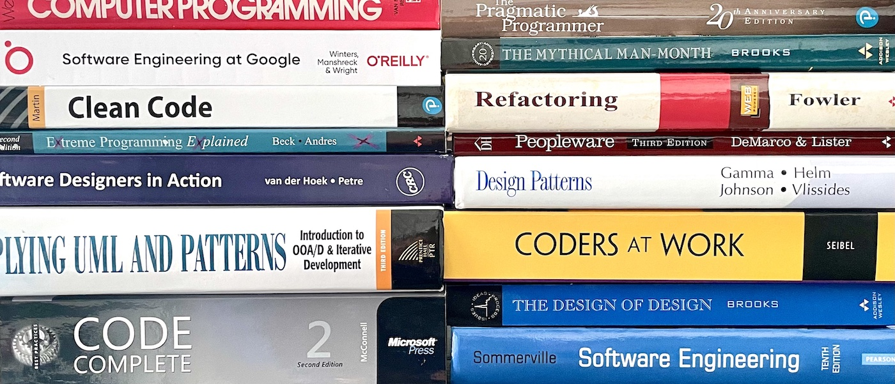

Austin Z. Henley
I work on dev tools.
A study guide for software engineering students
3/14/2022

While teaching undergraduate software engineering for four years, I came up with a long list of topics I wished the students were exposed to. In reality, my courses only covered a small subset in detail. Most software engineering textbooks aren't very good and rarely convey day-to-day life as a developer.
But I must warn you: People on the internet are extremely opinionated about these topics. For example, you might see people say "design patterns are the devil" or "my incarnation of Scrum is the only correct way" or "all you actually need is to be a good coder". Be careful. It is helpful to know about the topics and the debates around them.
My study guide is divided into three categories: the process, the tools, and the code. Plus a bonus fourth category: the life. You'll need to use a variety of resources to learn each topic.
The Process
- Waterfall model
- Iterative and incremental development
- Agile, Scrum, XP, Test-Driven Development, etc.
- Standups
- Iterations
- Requirements
- Estimating and prioritizing
- Issue tracking
- User stories
- Pair programming
- Code reviewing
- Testing
- Whitebox testing
- Blackbox testing
- Regression testing
- Usability testing
- Understanding failures
- Case studies of famous software failures
- Chaos engineering
- Popular books:
The Tools
- Version control
- Distributed vs centralized
- git
- GitHub
- Issue tracker
- Code reviewing tool
- Build system
- Unit test framework
- CI/CD
- Program analyzer
- Linter
- Debugger
- Telemetry
- Type checker
- Refactoring tool
- Package management
- Documentation generation
- Containers
- Regular expressions
- API client
- DBMS
- Sysadmin and command line
- Bash
- Common Unix/Linux programs
- Basic: cd, ls, pwd, cat, touch, rm, chmod, ssh
- Intermediate: grep, awk, sed
- Advanced: How to exit vi
The Code
- Architecture and organization
- Design patterns
- What they are, pros, and cons
- Ex: singleton, factory, observer
- Model-view-controller
- Readability and modularity
- Technical debt
- Heuristics for clean code
- Encapsulation
- Coupling and cohesion
- Separation of concerns
- OOP
- Metrics
- Error handling
- Documentation
- Popular books:
The Life
- Ethics
- Interviewing
- Leetcode
- Levels.fyi
- Cracking the Coding Interview (Amazon)
- Elements of Programming Interviews (Amazon)
- System Design Interview (Amazon)
- Performance reviews
- Contributions (LoC, bug fixes, code reviews, mentorship, leadership, innovation)
- Open source
- Software licenses
- Staying up to date
- Hacker News
- Reddit
- Twitter
- Professional conferences
- Blogs
- Side projects
- Portfolio
- Interacting with team
If I missed something or you disagree, please tweet me. 😎
There are Amazon affiliate links on this page.